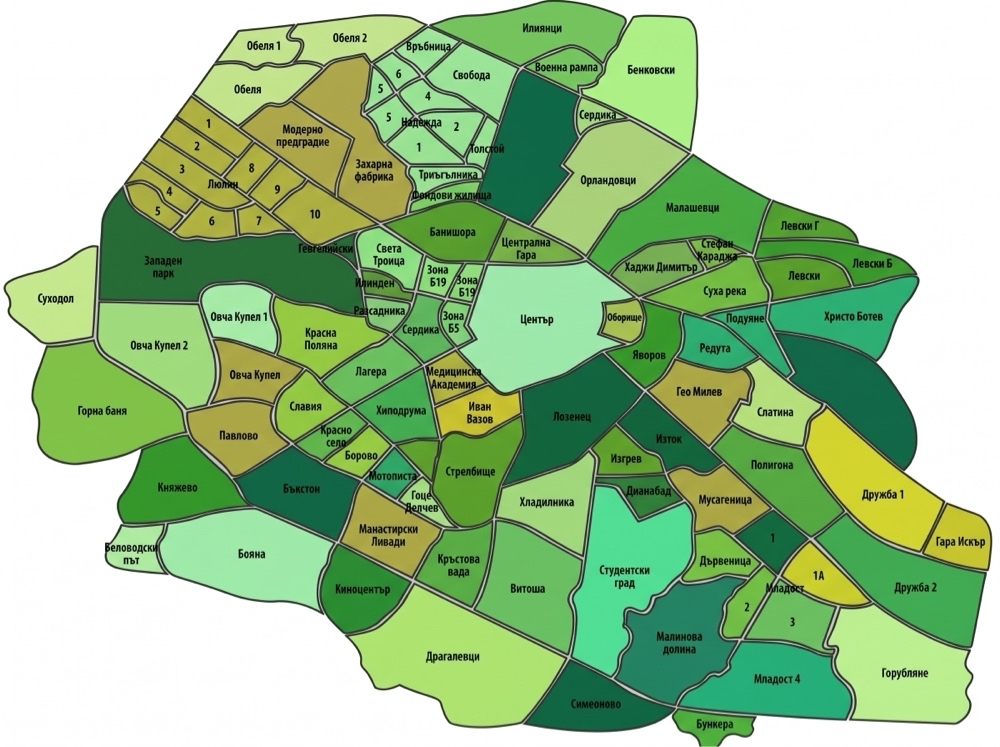

Въведете вашия квартал, улица или адрес за моментална проверка в официалния списък на София.

Вижте базовата ни точка в София и навигирайте директно през Google Maps.
Денонощно покритие за целия град София и околните квартали.
Виж локацията на картата →